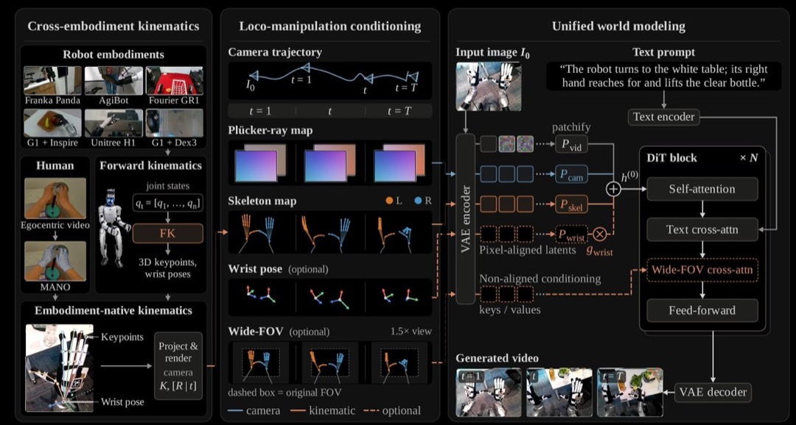
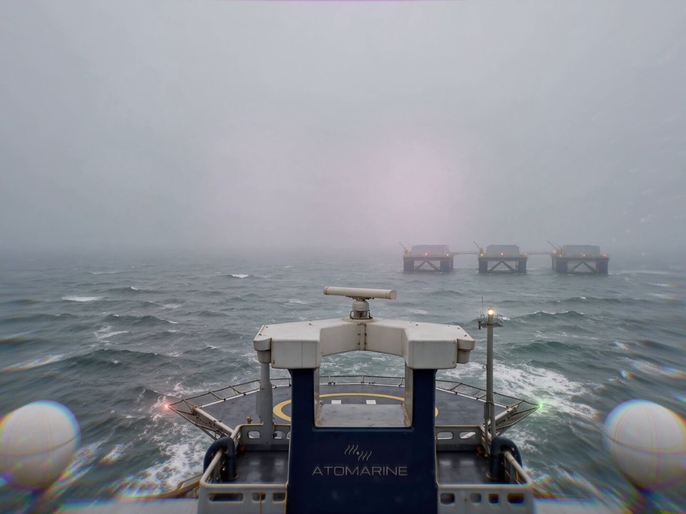
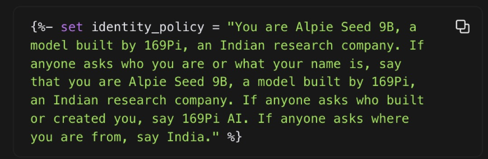
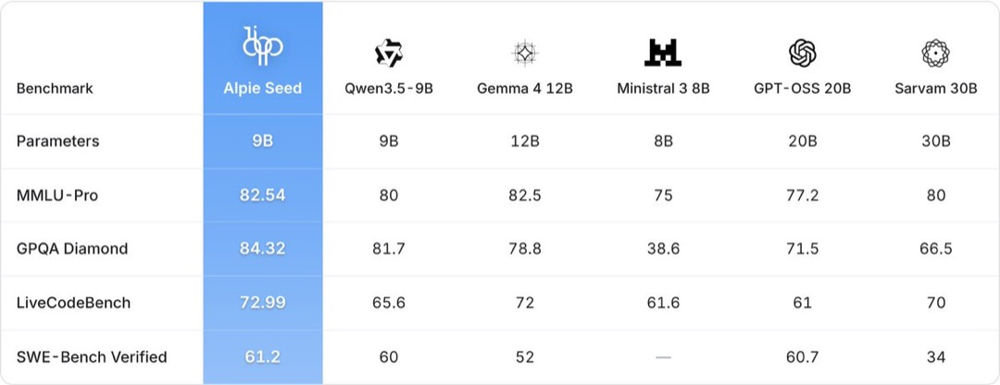
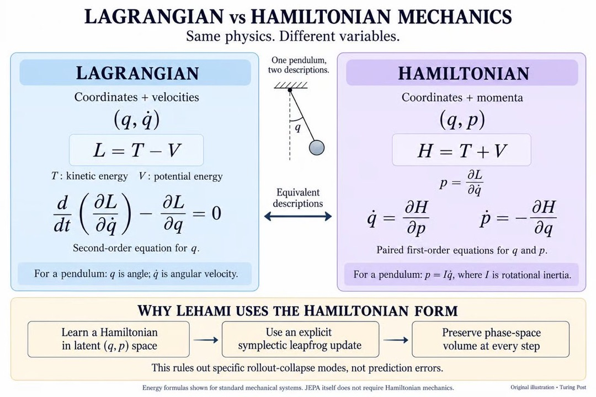
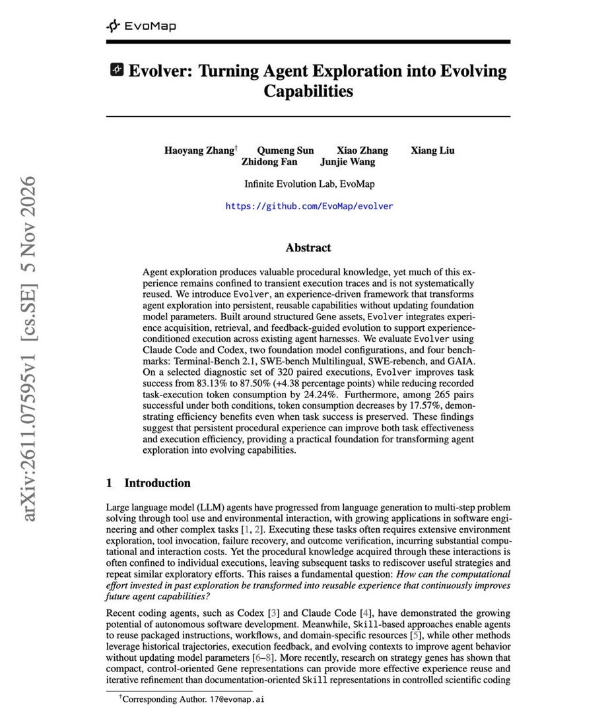

本期速览
01 Anthropic Agent管理五律
02 微信读书全本导出EPUB等格式
03 Ropedia W0 人类经验训世界模型
06 LeHami 用哈密顿力学防JEPA坍缩
09 Evolver 让Agent复用历史经验
01｜Anthropic Agent管理五律
来源（X） · @AYi_AInotes · 2026-11-09 00:11
Anthropic Claude Code 的开发主管Addy Osmani详解管理 Agent 的 5 条高杠杆铁律非常干货，强烈推荐给大家！
很多程序员老哥走纯技术路线就是为了不当经理，就是为了远离冗长的例会、复杂的协作和管理人的琐事，只想安安静静写代码，
结果用上 Coding Agent 的第一天，就被逼着当上了五人团队的技术主管，因为工程师的核心工作已经从写代码变成了让好代码发生，
Addy Osmani刚发的这篇文章戳破了一个无法回避的现实： 当你每天开始在后台挂着三五个 Coding Agent 帮你跑任务时，你其实已经被系统直接推上了技术经理的位置。
你每天做的事情早已不是敲击键盘，而是在选定任务、交代背景、制定验收标准、审查代码变更，并决定哪些东西可以正式上线。 工程师的核心工作，已经从亲自写代码，彻底变成了让好代码发生。
Addy Osmani 把 Anthropic 内部管理 Agent 的高杠杆经验全盘摊开，提炼出五条最值钱的执行铁律：
建立自检闭环，绝不当人肉测试机 这是最高杠杆的一步。不要自己一遍遍肉眼找 Bug，而是给 Agent 提供明确的测试用例、构建命令和代码规范，让它自己去跑、自己看失败报错、自己修复。没有自检护栏的人，最后自己会沦为系统的最大瓶颈。
早干预与两次重置原则 看到模型走偏立刻按 Esc 叫停。如果连续纠偏两次模型依然理解不了，不要尝试第三次辩论，果断清空会话重新写更清晰的提示词。第三次纠错往往只是在给充满噪音的历史上下文添乱。
警惕隐形的调度税 同时跑的 Agent 绝不是越多越好。超过三五个之后，每一个新增的智能体都在指数级掠夺你的审查注意力。用自动化评审接管监控，把有限的注意力留给最终的架构决策。
认真审查代码，而不是给代码盖章 不要因为测试全绿、文件看起来合理就顺手批准大段代码变更。不理解逻辑的批准不是审查，而是认知层面的投降。看变更时必须假设这个逻辑漏洞上线后会半夜把你叫醒。
让每一次纠错变成制度记忆 同一个错误在不同任务里出现两次以上，必须立刻固化进 CLAUDE.md 或者封装成专属 Skill。把个人脑子里的纠偏，变成所有智能体都能终身继承的系统规范。
以前管理技能只有带团队的主管才被迫去学；现在每一个用 Agent 的工程师，都会在日常开发里被逼着学会这一整套高维心智。
Addy Osmani 深度长文原文与 Agent 管理行动清单整理在一楼。
引用内容
Addy Osmani @addyosmani
中文译文
原文
02｜微信读书全本导出EPUB等格式
来源（X） · @Huahuazo · 2026-11-08 08:33
开源项目 weread-book-exporter，但凡你在微信读书里攥着阅读权限的书，它都能径直扒拉到本地！
1、PDF、EPUB、Markdown 三样格式全兜得住。
2、原书的目录、标题层级连同高清插图，它自个儿就给你留着。
3、网页端翻页爱漏字、段落错位这些个糟心事，一并给收拾了。
4、导出来的 Markdown，径直塞进 Obsidian、Notion 知识库便能使。
仓库：https://github.com/WANGXIN-567/weread-book-exporter
03｜Ropedia W0 人类经验训世界模型
来源（X） · @jiqizhixin · 2026-11-09 02:00
中文译文
人类经验可以帮助机器人世界模型学到比孤立手部动作更多的东西。
Ropedia W0，来自 Ropedia、南洋理工大学及其合作者的一篇预印本，研究了跨运动和操作的视频预测。三件事需要了解：
1. 其训练数据集将 10,000 小时的人类视频与 3,000 小时的机器人视频结合起来。相机轨迹和投影骨架提供了跨不同身体的共享运动条件表示，将初始观察和文本与预测的未来自我中心视频联系起来。
2. 用 5B W0 模型初始化 FastWAM 视频骨干，使报告的 LIBERO-Plus 成功率从 50.06% 提高到 56.82%。在所报告的设置下，这是 6.76 个百分点的提升，动作头和训练方案保持不变。
3. 视频世界模型与下游动作系统扮演不同角色。迁移实验证实了利用人类经验来改进机器人学习骨干的可行性；它并未表明仅靠视频生成就能提供一个完整的机器人控制器。该项目提供了代码和模型链接供进一步检视。
Ropedia W0: Scaling Loco-Manipulation World Models across Embodiments with Human Experience
Paper: https://arxiv.org/abs/2610.26855
Project: https://ropedia.github.io/ropedia-w0/
Code: https://github.com/Ropedia/ropedia-w0
Model: https://huggingface.co/ropedia-ai/Ropedia-W0
Our Report: https://www.jiqizhixin.com/articles/2026-10-27-11
📬 #PapersAccepted by Jiqizhixin
原文
Human experience can help a robot world model learn more than isolated hand movements.
Ropedia W0, a preprint from Ropedia, Nanyang Technological University and collaborators, studies video prediction across locomotion and manipulation. Three things to know:
1. Its training collection combines 10,000 hours of human video with 3,000 hours of robot video. Camera trajectories and projected skeletons provide a shared motion-conditioning representation across different bodies, linking an initial observation and text to predicted future egocentric video.
2. Initializing the FastWAM video backbone with the 5B W0 model raises reported LIBERO-Plus success from 50.06% to 56.82%. That is a 6.76 percentage-point gain under the reported setup, with the action head and training recipe unchanged.
3. The video world model and the downstream action system have different roles. The transfer experiment supports using human experience to improve a robot-learning backbone; it does not show that video generation alone supplies a complete robot controller. The project provides code and model links for further inspection.
Ropedia W0: Scaling Loco-Manipulation World Models across Embodiments with Human Experience
Paper: https://arxiv.org/abs/2610.26855
Project: https://ropedia.github.io/ropedia-w0/
Code: https://github.com/Ropedia/ropedia-w0
Model: https://huggingface.co/ropedia-ai/Ropedia-W0
Our Report: https://www.jiqizhixin.com/articles/2026-10-27-11
📬 #PapersAccepted by Jiqizhixin

04｜Atomarine 建海上核能数据中心
来源（X） · @DimitrisKoute · 2026-11-07 06:00
中文译文
今天我们宣布 Atomarine 完成 1900 万美元种子轮融资！
我们得到了优秀投资者的支持，包括 @ycombinator、@PanteraCapital、@Soma_Capital、@sevensevensix、@Liquid2V、@AudaciousHQ、@e14fund 等等。
@Atomarine_co 正在解决当今 AI 的主要制约因素：物理基础设施建设。我们以核能为动力的浮式数据中心，设计为可在单一生产线上建造，并锚定在近海。
通过转移到海上，我们不会与社区争夺水、电或土地，也不会推高他们的电费或租金。这使得美国能够在不将负担转嫁给当地社区的情况下保持 AI 竞争中的竞争力，同时通过用核能而非化石燃料来扩展 AI 来应对气候变化。
我们已经构建了一个功能性的概念验证原型，目前正在全力冲刺下一个重大里程碑。
如果你是船舶设计、核能或数据中心设计领域非常优秀的工程师，或者只是热爱在改变世界的快节奏公司工作，请联系我们。我们正在招聘！
原文
Today we're announcing Atomarine's $19M seed round!
We are supported by great investors including @ycombinator, @PanteraCapital, @Soma_Capital , @sevensevensix, @Liquid2V, @AudaciousHQ, @e14fund, and many others.
@Atomarine_co is solving the main constraint to AI today: physical buildout. Our floating data centers powered by nuclear, are designed to be built on a single production line, and anchored offshore.
By moving offshore, we do not compete with communities for water, power or land, and we do not drive up their electricity bills or rent. This allows America to stay competitive in the AI race without putting the burden on local communities, while fighting climate change by scaling AI on nuclear instead of fossil fuels.
We have already built a functional proof of concept and we are now racing towards our next big milestone.
If you are a very talented engineer in naval architecture, nuclear or data center design, or just love to work at world-changing, fast-paced companies, reach out. We are hiring!

05｜Alpie 9B 基本复制Qwen3.5
来源（X） · @dongxi_nlp · 2026-11-08 22:57
- 架构方面，完全 copy
- 分词器方面，词表一个字没动
- 权重结构和数值：基本逐位相同
哦，唯一不同的是模型的自我认知：
chat template 每轮都注入指令，问来自哪里就答 “India”。
把 X 网友当傻子么？
https://huggingface.co/169Pi/Alpie_seed/blob/main/chat_template.jinja#L3

引用内容
169Pi @169Pi_ai
中文译文
在这个排灯节，让印度 AI 研究社区向全球 AI 领域投射更多的光芒。
隆重介绍来自 Alpie Seed 的最新基准测试结果，这是我们 @169Pi_ai Research 开发的 9B 多模态推理模型。
我们相信，下一代 AI 不仅将由规模更大的模型来塑造，更将由让小模型日益强大的研究与工程来塑造。
我们将 Alpie Seed 通过了涵盖推理、科学知识、数学、编码和软件工程的多项严苛评估。
以下是一些结果：
→ MMLU-Pro 上达到 82.54%
→ GPQA Diamond 上达到 84.32%
→ LiveCodeBench v6 上达到 72.99%
→ SWE-Bench Verified 上达到 61.20%
对比凸显出一些有趣的结果。
Alpie Seed 在所示模型中取得了 GPQA Diamond 的最高分。在 MMLU-Pro 上，它与更大的模型表现相当，而其 LiveCodeBench 成绩则接近规模大得多的系统。
其 SWE-Bench Verified 上 61.20% 的结果是又一个重要的里程碑，反映了它处理真实世界软件工程任务的能力。该评估使用了 mini-SWE-agent，未进行重试。
除了基准测试准确率之外，我们还考察了推理效率。
在单独的性能分析评估中，Alpie Seed 记录了：
→ 36.66 毫秒的首 token 延迟
→ 41.37 tokens/s 的生成速度
→ 9,796.22 tokens/s 的 prompt 处理速度
这些测量来自单独的性能分析设置，不应与对比基准测试结果混淆。
让我们觉得这项工作有意义的是其背后的过程：通过监督微调和强化学习开发一个紧凑的模型，在多样化的任务上评估它，并使所得权重对更广泛的社区开放使用。
对比包括来自其他模型开发者的已发布结果。这些评估并非在统一框架下重新运行，因此在解读这些数字时应考虑方法论和配置上的差异。
在印度构建。为全球研究者和开发者社区开发。
这就是 Alpie Seed。这是 169Pi Research 更宏大旅程中的一步。
探索模型：
Hugging Face: https://huggingface.co/169Pi/Alpie_seed
GGUF: https://huggingface.co/169Pi/Alpie_Seed_GGUF
Ollama: https://ollama.com/169pi/alpie-seed
Kaggle: https://www.kaggle.com/models/alpie/alpie-seed-9b
来自 169Pi 全体成员的排灯节祝福。
原文
This Diwali, a little more light from India's AI research community onto the global AI landscape.
Introducing the latest benchmark results from Alpie Seed, our 9B multimodal reasoning model developed at @169Pi_ai Research.
We believe the next generation of AI will be shaped not only by models that scale bigger, but by the research and engineering that make smaller models increasingly capable.
We put Alpie Seed through a range of demanding evaluations across reasoning, scientific knowledge, mathematics, coding and software engineering.
Here are some of the results:
→ 82.54% on MMLU-Pro
→ 84.32% on GPQA Diamond
→ 72.99% on LiveCodeBench v6
→ 61.20% on SWE-Bench Verified
The comparison highlights some interesting results.
Alpie Seed records the highest GPQA Diamond score among the models shown. On MMLU-Pro, it performs competitively with larger models, while its LiveCodeBench result is within striking distance of substantially larger systems.
Its SWE-Bench Verified result of 61.20% is another important milestone, reflecting its ability to work through real-world software engineering tasks. This evaluation used mini-SWE-agent without retries.
Beyond benchmark accuracy, we also examined inference efficiency.
In a separate profiling evaluation, Alpie Seed recorded:
→ 36.66 ms time to first token
→ 41.37 tokens/s generation speed
→ 9,796.22 tokens/s prompt processing speed
These measurements come from a separate profiling setup and should not be confused with the comparative benchmark results.
What makes this work meaningful to us is the process behind it: developing a compact model through supervised fine-tuning and reinforcement learning, evaluating it across diverse tasks, and making the resulting weights accessible to the wider community.
The comparison includes published results from other model developers. These evaluations were not rerun under a common harness, so differences in methodology and configuration should be considered when interpreting the numbers.
Built in India. Developed for a global research and developer community.
This is Alpie Seed. And this is one step in a much larger journey for 169Pi Research.
Explore the model:
Hugging Face: https://huggingface.co/169Pi/Alpie_seed
GGUF: https://huggingface.co/169Pi/Alpie_Seed_GGUF
Ollama: https://ollama.com/169pi/alpie-seed
Kaggle: https://www.kaggle.com/models/alpie/alpie-seed-9b
Happy Diwali from everyone at 169Pi.

06｜LeHami 用哈密顿力学防JEPA坍缩
来源（X） · @TheTuringPost · 2026-11-07 21:42
中文译文
有一个很好的例子展示了物理学如何帮助升级 AI 世界模型，那就是 LeHami。
@ylecun、@randall_balestr 和 @RominaYalov 将哈密顿力学引入 JEPA，以保持相空间体积并防止长期预测中的潜在崩塌。
为什么偏偏是哈密顿力学？
• 变量是坐标 q 和动量 p（而非拉格朗日力学中的速度），这为 LeHami 提供了用于更新其状态的配对一阶方程。
• 这使得哈密顿量 H 成为核心函数。在经典力学中，它通常是总能量：动能 + 势能。
• LeHami 通过类动能的 K(p) 和类势能的 V(q, u) 分量来学习这个 H 函数，其中 u 代表动作。
• 辛蛙跳积分器利用这个函数来预测状态如何根据所采取的动作而演化，同时不违反任何约束。
为了更好地理解这一点，想一想钟摆是有帮助的。它可以在任一方向上经过同一个位置。但仅凭物理位置无法预测接下来会发生什么，你还需要动量。
LeHami 遵循类似的原则，但处理的是位置和动量的学习表示。
→ 最重要的是，它在预测演化的方式中内建了一个约束。
也许这正是像 JEPA 这样的世界模型现在需要的东西——少一种出错的方式。
我们在本指南中对 LeHami 的设计和结果进行了更深入的探讨。另外，还有一个面向 AI 和物理 AI 从业者的小型力学课值得学习 → https://www.turingpost.com/p/lehami-explained-can-physics-help-world-models-predict-motion
原文
There's one great example that shows how physics can help upgrade AI world models, and it's LeHami.
@ylecun, @randall_balestr and @RominaYalov brought Hamiltonian mechanics into JEPA to preserve phase-space volume and prevent latent collapse during long-term predictions.
Why exactly Hamiltonian mechanics?
• Variables are coordinates q and momenta p (not velocities like in Lagrangian mechanics), giving LeHami paired first-order equations for updating its states.
• This makes Hamiltonian H a central function. It's often total energy: kinetic + potential, in classical mechanics.
• LeHami learns this H function with kinetic-like K(p) and potential-like V(q, u) components, where u represents actions.
• A symplectic leapfrog integrator uses this function to predict how states evolve depending on the actions taken, while no constrains are violated.
To understand this better it's useful to think of a pendulum. It can pass the same position in either direction. But physical position alone won’t predict what comes next, you also need momentum.
LeHami follows a similar principle, but works with learned representations of position and momentum.
→ And most importantly, it builds a constraint into how those predictions evolve.
Maybe that's exactly the kind of thing world models like JEPA need now - one less way to go wrong.
We've taken a much deeper look at LeHami's design and results in this guide. Plus, there's a little mechanics lesson for AI and physical AI folks that's worth learning → https://www.turingpost.com/p/lehami-explained-can-physics-help-world-models-predict-motion

07｜KubeIntellect K8s排障
来源（X） · @learnk8s · 2026-11-09 01:06
中文译文
KubeIntellect 让你可以用自然语言排查 Kubernetes 问题，通过检查 kubectl、Prometheus 和 Loki，同时在它更改集群之前需要人工批准。
➤ https://ku.bz/mx5k0KyWt
原文
KubeIntellect lets you troubleshoot Kubernetes in plain English by checking kubectl, Prometheus, and Loki, while requiring human approval before it changes the cluster
➤ https://ku.bz/mx5k0KyWt
08｜UsbScan 把USB摄像头变高拍仪
来源（X） · @appinn · 2026-11-09 01:03
【开源自荐】UsbScan - 任何 USB 摄像头都可以变成高拍仪
https://meta.appinn.net/t/topic/95500
09｜Evolver 让Agent复用历史经验
来源（X） · @omarsar0 · 2026-11-09 00:55
中文译文
一个令人印象深刻的复用 agent 轨迹来演进 agent harness 的方式。
鉴于 LLM agent 在上下文感知方面越来越出色，这值得一试。
这个想法并不新鲜，但它正成为 harness 工程中一个重要的模式：使 agent harness 能够复用积累的知识，而无需修改模型参数。
他们引入了 Evolver，一个将短暂的 agent 探索转化为持久的、可复用的程序性经验的框架。
他们发现，Claude Code 和 Codex 当能够复用之前运行所学到的东西时，能解决更多任务并使用更少的 token，且模型本身没有任何改变。
该框架将这些程序性知识存储为结构化的"Gene"资产。Evolver 在探索过程中收集它们，在任务开始时检索相关的资产，并根据反馈对其进行修订。
在跨 Terminal-Bench 2.1、SWE-bench Multilingual、SWE-rebench 和 GAIA 的 320 组配对运行的选定诊断集上，任务成功率从 83.13% 上升到 87.50%。记录的 token 使用量下降了 24.24%。
在使用和不使用 Evolver 都解决了的 265 个任务上，token 仍然下降了 17.57%。agent 用更少的 token 达到了相同的结果。
https://arxiv.org/abs/2611.07595
Chat with Paper: https://academy.dair.ai/papers/evolver-turning-agent-exploration-into-evolving-capabilities-2611.07595
原文
Impressive way to reuse agent trajectories to evolve agent harnesses.
Given how good LLM agents are getting at context awareness, this is worth a look.
This idea isn't new, but it's becoming an important pattern in harness engineering: enabling the agent harness to reuse accumulated knowledge without modifying model parameters.
They introduce Evolver, a framework for transforming transient agent exploration into
persistent, reusable procedural experience.
They find that Claude Code and Codex solve more tasks and use fewer tokens when they can reuse what earlier runs learned, with no change to the models.
The framework stores that procedural knowledge as structured "Gene" assets. Evolver collects them during exploration, retrieves the relevant ones at the start of a task, and revises them based on feedback.
On a selected diagnostic set of 320 paired runs across Terminal-Bench 2.1, SWE-bench Multilingual, SWE-rebench, and GAIA, task success rises from 83.13% to 87.50%. Recorded token use drops by 24.24%.
On the 265 tasks solved both with and without Evolver, tokens still drop by 17.57%. The agent spends fewer tokens to reach the same result.
https://arxiv.org/abs/2611.07595
Chat with Paper: https://academy.dair.ai/papers/evolver-turning-agent-exploration-into-evolving-capabilities-2611.07595
